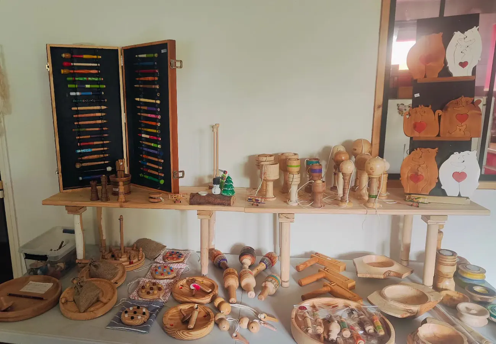

Tourner
Le tour donne la rondeur. Vases, soliflores, boîtes, toupies, cache-douilles : tout ce qui est rond ici est passé entre les pointes.
Le tour démarre
Armancourt · Oise · Hauts-de-France
Du bois flotté ramassé sur le sable, un tronc donné par une voisine, un prunus de cent vingt ans. Stéphane cherche dedans ce que personne n'y voit, puis il le fait tourner.
Lampes · Vases · Jeux · Écriture
L'idée
C'est Stéphane qui l'écrit, à propos d'une lampe. La phrase vaut pour tout l'atelier. Rien ici ne part d'un plan : ça part d'une branche tombée, d'un morceau donné il y a trois ans qui a traversé toutes sortes d'idées non abouties, d'un bois qu'un coup de tronçonneuse a fini par révéler. La forme vient après, au tour.
Quand le bois ne suffit plus, le métal prend le relais. Fer plat pour la structure, fer rond pour le dessin, soudure pour tenir l'ensemble. Les carcasses d'abat-jour, les anses et jusqu'aux aiguilles d'un réveil sortent du même atelier.
Le tour donne la rondeur. Vases, soliflores, boîtes, toupies, cache-douilles : tout ce qui est rond ici est passé entre les pointes.
Le bois flotté arrive déjà sculpté par l'eau et le sel. Beaucoup de nettoyage, beaucoup de ponçage, et surtout aucune forme imposée.
Fer plat et fer rond, pliés et assemblés sur place. C'est de là que viennent les abat-jour, les cercles et les anses.
La pyrogravure signe la pièce. Initiales, motifs, dates : c'est là qu'un objet devient celui de quelqu'un.
Un corps tourné entre les pointes, les deux extrémités teintées, et trois filets noirs à la jonction. Chez Stéphane, le même geste sert à faire un stylo ou un pied de lampe.
Un plateau, un bourrelet, un logement au centre. Presque rien, et c'est justement ce qui est difficile : sur une pièce plate, la moindre hésitation du ciseau se voit.
Quatre-vingt-dix-neuf pour cent de pin, avec ses cernes pour cadran et deux cloches tournées sur le dessus. Les aiguilles en métal ont été faites ici aussi.
Deux boules tournées, retenues l'une à l'autre par une cordelette. Un exercice de tour qui finit par devenir un objet.
Volumes dessinés d'après les pièces de l'atelier. Attrapez-les et faites-les tourner dans tous les sens, ou continuez de défiler.
Le rayon le plus fourni
Chacune a son histoire, et Stéphane la raconte mieux que personne. Une lampe à tiroir, pour y cacher une friandise ou un bijou. Une prisonnière, cadenassée, dont le propriétaire devra bien s'expliquer un jour. Un chaudron pas magique, posé sur trois pieds et paré de flammes.
Bois flotté, thuya, bois brûlé puis ciré, carcasses de fer soudées : douze luminaires, et pas deux qui se ressemblent.

L'atelier
« Moi c'est Stef, je fabrique des objets en bois, avec un tour à bois ou en les assemblant, et en les mariant avec d'autres matériaux. » C'est ainsi qu'il se présente, et il n'y a pas grand-chose à ajouter.
L'atelier est à Armancourt, dans l'Oise. Les bois viennent d'un peu partout : pommier de la Nièvre, noyer de l'Orne, glycine, prunus de plus de cent vingt ans, buis, thuya, bambou du jardin. Beaucoup sont donnés, et il pense aux donateurs en les travaillant. Aucun n'est acheté parce qu'il est joli.
L'hiver, l'étal monte sur les marchés de Noël de la région.
La boutique
Chaque pièce est unique, parce que le morceau de bois qui l'a faite l'était. Un prix affiché promettrait un catalogue qui n'existe pas, et un stock qui n'existe pas non plus.
Alors on montre. Si une pièce vous arrête, vous écrivez, et Stéphane répond. Une commande sur mesure, une pièce à personnaliser à la pyrogravure, une idée dont vous ne savez pas encore si elle est faisable : c'est le même bouton.
La suite
Écrivez à Stéphane. Dites-lui ce qui vous a arrêté, il vous dira si la pièce existe encore et ce qu'il peut faire d'approchant.